01: Preprocessing the PBMC 3k dataset with Python
Data Download
QC
Normalization
Dimensionality Reduction and Manifold Embedding
Clustering
DEA and Annotation
Reference
1. Data Download
Downloading the PBMC3k dataset from 10x Genomics’s source
[1]:
%%bash
DATA_DIR="./data"
FILE_NAME="pbmc3k"
SRC="http://cf.10xgenomics.com/samples/cell-exp/1.1.0/pbmc3k/pbmc3k_filtered_gene_bc_matrices.tar.gz"
mkdir -p "$DATA=DIR"
if [ -f "$DATA_DIR/$FILE_NAME/matrix.mtx" ]; then
echo "$FILE_NAME data already exists. Skipping download"
else
wget -q $SRC -O "$DATA_DIR/$FILE_NAME.tar.gz"
tar -xzf "$DATA_DIR/$FILE_NAME.tar.gz" -C "$DATA_DIR"
mkdir -p "$DATA_DIR/$FILE_NAME"
mv "$DATA_DIR/filtered_gene_bc_matrices/hg19/"* "$DATA_DIR/$FILE_NAME"
rm -rf "$DATA_DIR/filtered_gene_bc_matrices" "$DATA_DIR/$FILE_NAME.tar.gz"
echo "Download and extraction completed!"
fi
pbmc3k data already exists. Skipping download
2. QC
2-1. Thresholding QC metrics
[2]:
import glob
import logging
import os
import subprocess
from typing import NamedTuple
import warnings
os.environ["OMP_NUM_THREADS"] = "1"
os.environ["OPENBLAS_NUM_THREADS"] = "1"
os.environ["MKL_NUM_THREADS"] = "1"
os.environ["NUMEXPR_NUM_THREADS"] = "1"
os.environ["VECLIB_MAXIMUM_THREADS"] = "1"
logging.getLogger("fontTools.subset").setLevel(logging.WARNING)
warnings.filterwarnings("ignore")
import celltypist
import matplotlib.pyplot as plt
import matplotlib.colors as mcolors
import numpy as np
import pandas as pd
import polars as pl
import scanpy as sc
import seaborn as sns
from basalcelldemo_tools.anndata import transfer_embedding_info
from basalcelldemo_tools.preferences import kwarg_savefig, OUTPUT_DIR, DATA_DIR, CellTypist_Models
[3]:
adata = sc.read_10x_mtx("./data/pbmc3k")
[4]:
adata.var["mt"] = adata.var_names.str.startswith("MT-")
adata.var["ribo"] = adata.var_names.str.startswith(("RPS", "RPL"))
adata.var["hb"] = adata.var_names.str.contains("^HB[^(P)]")
[5]:
sc.pp.calculate_qc_metrics(adata, qc_vars=["mt", "ribo", "hb"], inplace=True, log1p=True)
OMP: Info #276: omp_set_nested routine deprecated, please use omp_set_max_active_levels instead.
[6]:
sc.pl.violin(
adata,
["n_genes_by_counts", "total_counts"],
jitter=0.4,
multi_panel=True,
)
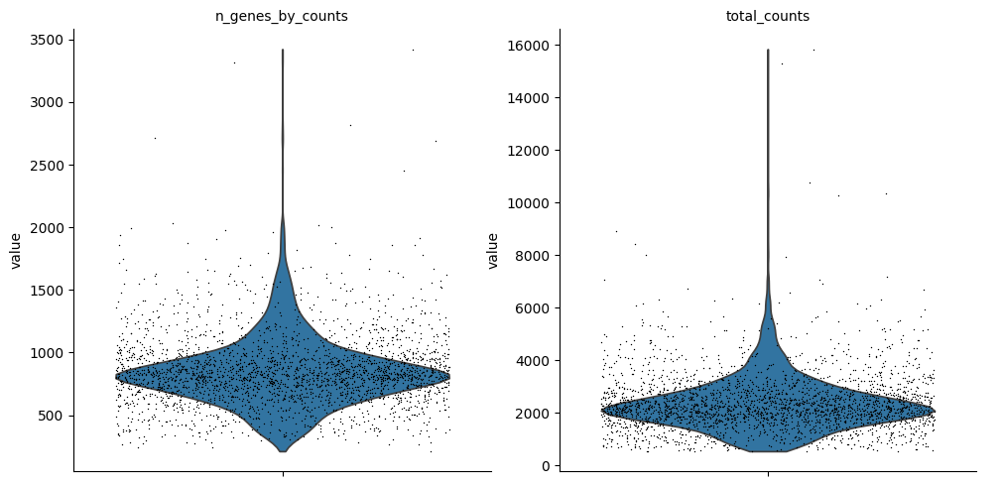
[7]:
sc.pl.violin(
adata,
["pct_counts_mt", "pct_counts_ribo", "pct_counts_hb"],
jitter=0.4,
multi_panel=True,
)
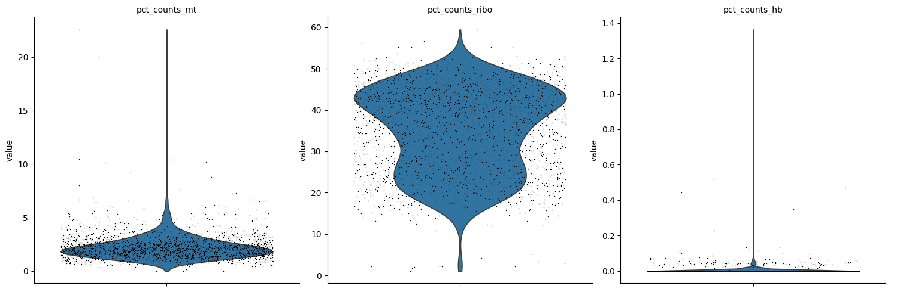
[8]:
filtered_cells = pl.from_pandas(adata.obs.reset_index()).filter(
(500 <= pl.col("n_genes_by_counts")) & \
(pl.col("n_genes_by_counts") <= 1500) & \
(pl.col("total_counts") < 6000) & \
(pl.col("pct_counts_mt") < 5) & \
(20 < pl.col("pct_counts_ribo")) & \
(pl.col("pct_counts_ribo") < 50) & \
(pl.col("pct_counts_hb") < 0.1)
).select("index").to_pandas().set_index("index").index
adata = adata[filtered_cells, :].copy()
[9]:
sc.pp.filter_cells(adata, min_genes=100)
sc.pp.filter_genes(adata, min_cells=3)
[10]:
sc.pl.scatter(adata, "total_counts", "n_genes_by_counts", color="pct_counts_mt")
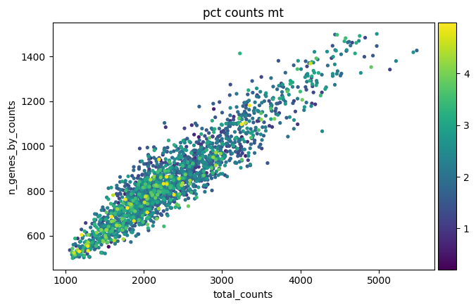
2-2. Doublet Detection
[11]:
sc.pp.scrublet(adata)
[12]:
sc.pl.scatter(
adata,
x="total_counts",
y="n_genes_by_counts",
color="predicted_doublet"
)
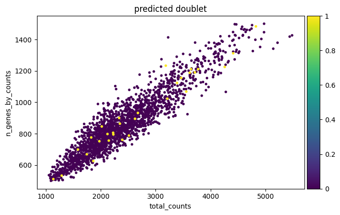
[13]:
adata = adata[~adata.obs["predicted_doublet"], :].copy()
3. Normalization
[14]:
adata.layers["counts"] = adata.X.copy()
[15]:
sc.pp.normalize_total(adata, target_sum=1e4)
sc.pp.log1p(adata)
4. Dimensionality Reduction and Manifold Embedding
4-1. Feature Selection
[16]:
ad_manifold = adata.copy()
[17]:
sc.pp.highly_variable_genes(ad_manifold, n_top_genes=3000)
sc.pl.highly_variable_genes(ad_manifold)
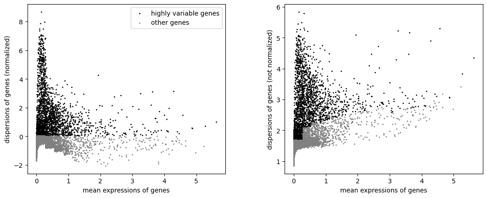
[18]:
ad_manifold = ad_manifold[:, ad_manifold.var.highly_variable]
4-2. Dimensionality Reduction
[19]:
sc.tl.pca(ad_manifold, svd_solver="arpack")
4-3. Manifold Embedding
[20]:
sc.pp.neighbors(ad_manifold, n_pcs=50)
[21]:
sc.tl.umap(ad_manifold)
[22]:
fig, ax = plt.subplots(figsize=(3, 3))
sc.pl.umap(ad_manifold, ax=ax, size=10, show=False)
ax.axis("off");
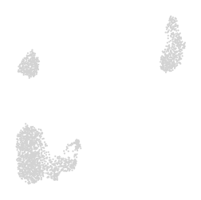
[23]:
transfer_embedding_info(
adata_source=ad_manifold,
adata_target=adata,
overwrite=True
)
del ad_manifold
5. Clustering
[24]:
sc.tl.leiden(adata, resolution=1)
[25]:
fig, ax = plt.subplots(figsize=(3, 3))
sc.pl.umap(adata, ax=ax, size=10, show=False, color="leiden")
ax.axis("off");
ax.set(title="")
ax.legend(
loc="center left", bbox_to_anchor=(1, .5),
title="Leiden", frameon=False
);
fig.savefig(OUTPUT_DIR / "umap.pdf", **kwarg_savefig)
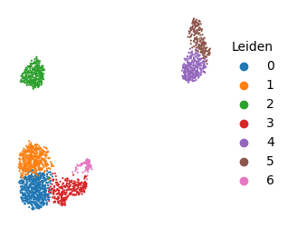
6. DEA and Annotation
6-1. DEA
[26]:
sc.tl.rank_genes_groups(adata, "leiden", method="wilcoxon")
[27]:
degs = pl.from_pandas(
sc.get.rank_genes_groups_df(adata, group=None)
).filter(
(pl.col("pvals_adj") < 0.05) &\
(pl.col("logfoldchanges") > 1)
).select(pl.col("group").cast(str), "names", "logfoldchanges", "pvals_adj")
degs.write_parquet(DATA_DIR / "degs.pq")
degs
[27]:
shape: (1_314, 4)
| group | names | logfoldchanges | pvals_adj |
|---|---|---|---|
| str | str | f32 | f64 |
| "0" | "LTB" | 2.279514 | 2.0982e-85 |
| "0" | "IL32" | 2.386184 | 3.6982e-74 |
| "0" | "LDHB" | 1.743769 | 3.9248e-66 |
| "0" | "IL7R" | 2.312467 | 1.8114e-63 |
| "0" | "CD3D" | 1.951366 | 2.8265e-49 |
| … | … | … | … |
| "6" | "PTGDR" | 3.548436 | 0.041779 |
| "6" | "PLEKHF1" | 3.495875 | 0.04282 |
| "6" | "MSN" | 1.374327 | 0.045105 |
| "6" | "JAK1" | 1.744266 | 0.047333 |
| "6" | "PRDX5" | 1.170669 | 0.047923 |
[28]:
fig, ax = plt.subplots(figsize=(12, 3))
n_degs = 5
sc.pl.dotplot(
adata,
dict(
degs.group_by(
"group", maintain_order=True
).agg(
pl.col("names").head(n_degs)
).iter_rows()
),
"leiden", ax=ax
)
ax.set(title=f"Top {n_degs} DEGs")
fig.savefig(OUTPUT_DIR / f"top{n_degs}degs.pdf", **kwarg_savefig)
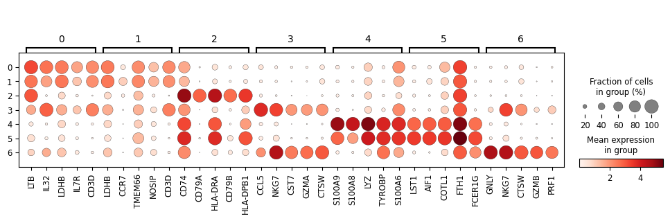
[29]:
sc.get.obs_df(
adata,
keys=degs["names"].unique(maintain_order=True).to_numpy().tolist() + ["leiden"]
).reset_index().to_parquet(DATA_DIR / "expressions.pq")
[30]:
n_degs = 10
degs.group_by(
"group", maintain_order=True
).agg(
pl.col("names").head(n_degs)
).explode("names").unique(
"names", maintain_order=True
).with_columns(
leiden_colors=pl.col("group").replace(
{str(i): v for i, v in enumerate(adata.uns["leiden_colors"])}
)
).write_parquet(DATA_DIR / "top_degs.pq")
6-2. Automated Annotation with CellTypist
[31]:
celltypist.models.models_path = str(CellTypist_Models)
if not glob.glob(str(CellTypist_Models / ".pkl")):
celltypist.models.download_models()
📂 Storing models in /Users/yujiokano/Develop/BasalCellDemo/basalcelldemo_tools/celltypist_models
⏩ Skipping [1/61]: Immune_All_Low.pkl (file exists)
⏩ Skipping [2/61]: Immune_All_High.pkl (file exists)
⏩ Skipping [3/61]: Adult_COVID19_PBMC.pkl (file exists)
⏩ Skipping [4/61]: Adult_CynomolgusMacaque_Hippocampus.pkl (file exists)
⏩ Skipping [5/61]: Adult_Human_MTG.pkl (file exists)
⏩ Skipping [6/61]: Adult_Human_PancreaticIslet.pkl (file exists)
⏩ Skipping [7/61]: Adult_Human_PrefrontalCortex.pkl (file exists)
⏩ Skipping [8/61]: Adult_Human_Skin.pkl (file exists)
⏩ Skipping [9/61]: Adult_Human_Vascular.pkl (file exists)
⏩ Skipping [10/61]: Adult_Mouse_Gut.pkl (file exists)
⏩ Skipping [11/61]: Adult_Mouse_OlfactoryBulb.pkl (file exists)
⏩ Skipping [12/61]: Adult_Pig_Hippocampus.pkl (file exists)
⏩ Skipping [13/61]: Adult_RhesusMacaque_Hippocampus.pkl (file exists)
⏩ Skipping [14/61]: Adult_cHSPCs_Illumina.pkl (file exists)
⏩ Skipping [15/61]: Adult_cHSPCs_Ultima.pkl (file exists)
⏩ Skipping [16/61]: Autopsy_COVID19_Lung.pkl (file exists)
⏩ Skipping [17/61]: COVID19_HumanChallenge_Blood.pkl (file exists)
⏩ Skipping [18/61]: COVID19_Immune_Landscape.pkl (file exists)
⏩ Skipping [19/61]: Cells_Adult_Breast.pkl (file exists)
⏩ Skipping [20/61]: Cells_Fetal_Lung.pkl (file exists)
⏩ Skipping [21/61]: Cells_Human_Tonsil.pkl (file exists)
⏩ Skipping [22/61]: Cells_Intestinal_Tract.pkl (file exists)
⏩ Skipping [23/61]: Cells_Lung_Airway.pkl (file exists)
⏩ Skipping [24/61]: Developing_Human_Brain.pkl (file exists)
⏩ Skipping [25/61]: Developing_Human_Gonads.pkl (file exists)
⏩ Skipping [26/61]: Developing_Human_Hippocampus.pkl (file exists)
⏩ Skipping [27/61]: Developing_Human_Organs.pkl (file exists)
⏩ Skipping [28/61]: Developing_Human_Thymus.pkl (file exists)
⏩ Skipping [29/61]: Developing_Mouse_Brain.pkl (file exists)
⏩ Skipping [30/61]: Developing_Mouse_Hippocampus.pkl (file exists)
⏩ Skipping [31/61]: Fetal_Human_AdrenalGlands.pkl (file exists)
⏩ Skipping [32/61]: Fetal_Human_Pancreas.pkl (file exists)
⏩ Skipping [33/61]: Fetal_Human_Pituitary.pkl (file exists)
⏩ Skipping [34/61]: Fetal_Human_Retina.pkl (file exists)
⏩ Skipping [35/61]: Fetal_Human_Skin.pkl (file exists)
⏩ Skipping [36/61]: Healthy_Adult_Heart.pkl (file exists)
⏩ Skipping [37/61]: Healthy_COVID19_PBMC.pkl (file exists)
⏩ Skipping [38/61]: Healthy_Human_Liver.pkl (file exists)
⏩ Skipping [39/61]: Healthy_Mouse_Liver.pkl (file exists)
⏩ Skipping [40/61]: Human_AdultAged_Hippocampus.pkl (file exists)
⏩ Skipping [41/61]: Human_Colorectal_Cancer.pkl (file exists)
⏩ Skipping [42/61]: Human_Developmental_Retina.pkl (file exists)
⏩ Skipping [43/61]: Human_Embryonic_YolkSac.pkl (file exists)
⏩ Skipping [44/61]: Human_Endometrium_Atlas.pkl (file exists)
⏩ Skipping [45/61]: Human_IPF_Lung.pkl (file exists)
⏩ Skipping [46/61]: Human_Longitudinal_Hippocampus.pkl (file exists)
⏩ Skipping [47/61]: Human_Lung_Atlas.pkl (file exists)
⏩ Skipping [48/61]: Human_PF_Lung.pkl (file exists)
⏩ Skipping [49/61]: Human_Placenta_Decidua.pkl (file exists)
⏩ Skipping [50/61]: Lethal_COVID19_Lung.pkl (file exists)
⏩ Skipping [51/61]: Mouse_Dendritic_Subtypes.pkl (file exists)
⏩ Skipping [52/61]: Mouse_Dentate_Gyrus.pkl (file exists)
⏩ Skipping [53/61]: Mouse_Isocortex_Hippocampus.pkl (file exists)
⏩ Skipping [54/61]: Mouse_Postnatal_DentateGyrus.pkl (file exists)
⏩ Skipping [55/61]: Mouse_Whole_Brain.pkl (file exists)
⏩ Skipping [56/61]: Nuclei_Human_InnerEar.pkl (file exists)
⏩ Skipping [57/61]: Nuclei_Lung_Airway.pkl (file exists)
⏩ Skipping [58/61]: PaediatricAdult_COVID19_Airway.pkl (file exists)
⏩ Skipping [59/61]: PaediatricAdult_COVID19_PBMC.pkl (file exists)
⏩ Skipping [60/61]: Pan_Fetal_Human.pkl (file exists)
⏩ Skipping [61/61]: Thymus_Allograft_PBMC.pkl (file exists)
[32]:
model_ct = celltypist.models.Model.load(model="Immune_All_Low.pkl")
[33]:
annotated = celltypist.annotate(
adata, model=model_ct,
majority_voting=True
).to_adata(adata, prefix="celltypist_")
🔬 Input data has 2070 cells and 13123 genes
🔗 Matching reference genes in the model
🧬 4007 features used for prediction
⚖️ Scaling input data
🖋️ Predicting labels
✅ Prediction done!
👀 Detected a neighborhood graph in the input object, will run over-clustering on the basis of it
⛓️ Over-clustering input data with resolution set to 5
🗳️ Majority voting the predictions
✅ Majority voting done!
[34]:
fig, ax = plt.subplots(1, 2, figsize=(8, 5))
candidate_size = adata.obs["celltypist_majority_voting"].unique().size
candidate_colors = {
v: mcolors.to_hex(
sc.plotting.palettes.godsnot_102[i]
) for i, v in enumerate(adata.obs["celltypist_majority_voting"].unique())
}
for a, hue in zip(ax.ravel(), ["leiden", "celltypist_majority_voting"]):
sc.pl.umap(
annotated, ax=a, size=10, show=False, color=hue,
palette=adata.uns["leiden_colors"] if hue == "leiden" else candidate_colors
)
a.axis("off");
a.set_aspect('equal')
a.set(title=hue)
a.legend(
loc="center left", bbox_to_anchor=(1, .5),
frameon=False
)
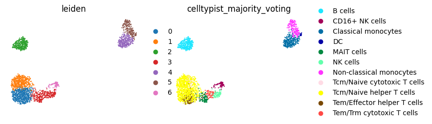
[35]:
fig, ax = plt.subplots(figsize=(3, 3))
sc.pl.umap(
adata, color="celltypist_majority_voting", ax=ax,
size=10, show=False, palette=candidate_colors
)
ax.axis("off");
ax.set(title="")
a.legend(
loc="center left", bbox_to_anchor=(1, .5),
frameon=False, title="CellTypist"
)
fig.savefig(OUTPUT_DIR / "umap_celltypist.pdf", **kwarg_savefig)
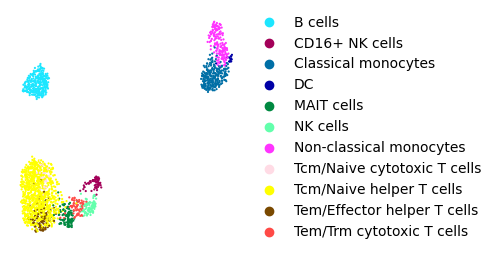
[36]:
fig, ax = plt.subplots(figsize=(6, 3))
df_ct = pd.crosstab(
annotated.obs["leiden"],
annotated.obs["celltypist_majority_voting"]
)
sns.heatmap(
data=(df_ct.T / df_ct.sum(axis=1)), cmap="viridis", ax=ax,
annot=True
)
ax.set(title="CellTypist Predictions", xlabel="Leiden", ylabel="")
fig.savefig(OUTPUT_DIR / "celltypist.pdf", **kwarg_savefig)
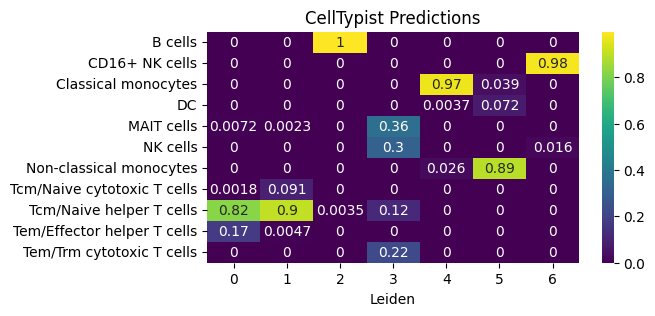
[37]:
df_obs = pl.DataFrame(
annotated.obs[["leiden", "celltypist_majority_voting"]]
)
mapping_df = (
df_obs.group_by("leiden", maintain_order=True)
.agg(pl.col("celltypist_majority_voting").mode().first().alias("ct"))
.cast(pl.String)
.sort("leiden")
.with_columns(
annotation=pl.when(pl.len().over("ct") > 1)
.then(
pl.col("ct") + " #" + pl.int_range(1, pl.len() + 1).over("ct").cast(pl.String)
)
.otherwise(pl.col("ct"))
)
.select("leiden", "annotation")
)
mapping_df
[37]:
shape: (7, 2)
| leiden | annotation |
|---|---|
| str | str |
| "0" | "Tcm/Naive helper T cells #1" |
| "1" | "Tcm/Naive helper T cells #2" |
| "2" | "B cells" |
| "3" | "MAIT cells" |
| "4" | "Classical monocytes" |
| "5" | "Non-classical monocytes" |
| "6" | "CD16+ NK cells" |
[38]:
adata.obs["annotation"] = adata.obs["leiden"].map(
dict(zip(mapping_df["leiden"], mapping_df["annotation"]))
)
[39]:
fig, ax = plt.subplots(figsize=(3, 3))
sc.pl.umap(
adata, color="annotation", ax=ax,
size=10, show=False, palette=adata.uns["leiden_colors"]
)
ax.axis("off");
ax.set(title="")
a.legend(
loc="center left", bbox_to_anchor=(1, .5),
frameon=False, title="Annotation"
)
fig.savefig(OUTPUT_DIR / "umap_with_annotation.pdf", **kwarg_savefig)
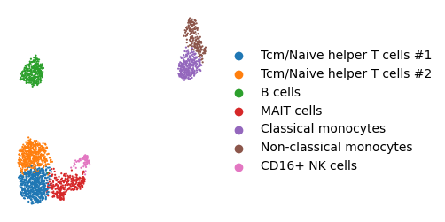
[40]:
pl.from_pandas(
adata.obs[
["leiden", "celltypist_majority_voting", "annotation"]
].astype(str).reset_index()
).with_columns(
leiden_colors=pl.col("leiden").replace(
{str(i): v for i, v in enumerate(adata.uns["leiden_colors"])}
)
).with_columns(
celltypist_colors=pl.col("celltypist_majority_voting").replace(
candidate_colors
)
).write_parquet(DATA_DIR / "annotations.pq")
[ ]: